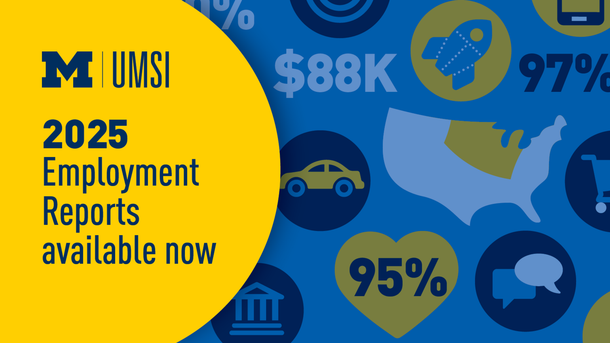

Salaries & Jobs
UMSI alumni go on to work deeply impactful and successful careers in a wide range of industries. From tech startups in the Bay Area to National Libraries in Washington DC, our graduates report high levels of satisfaction with their positions and salaries. Respondents also have reported offers of generous hiring bonuses, stock options, and other competitive benefits.
Industries That Many UMSI Graduates Work In
- Technology: Our alumni succeed in positions with companies such as Google, Meta, and Microsoft working in software engineering and product development.
- Libraries: Many of our graduates go on to work with universities, government agencies, and museums to preserve archives and historical records.
- Finance: UMSI alums are hired on by JP Morgan Chase, CitiGroup, Nasdaq, and other financial services institutions to work as analysts and designers.
- Healthcare: Healthcare companies such as Bluecross Blueshield and Michigan Medicine recruit our students for positions as UX researchers and data managers.
Employment Reports
- Bachelor of Science in Information Report
- Master of Science in Information Report
- Master of Health Informatics Report
- Master of Applied Data Science
- PhD in Information Report
